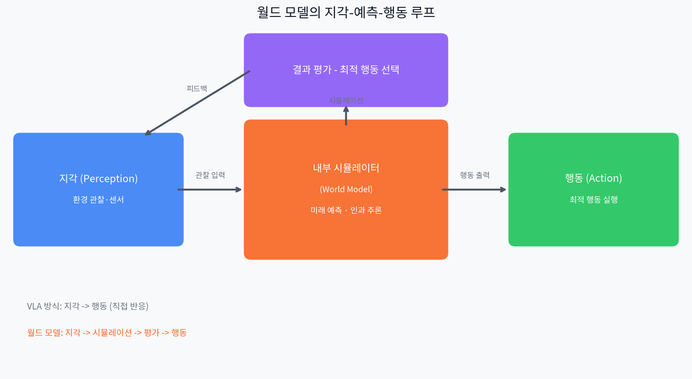
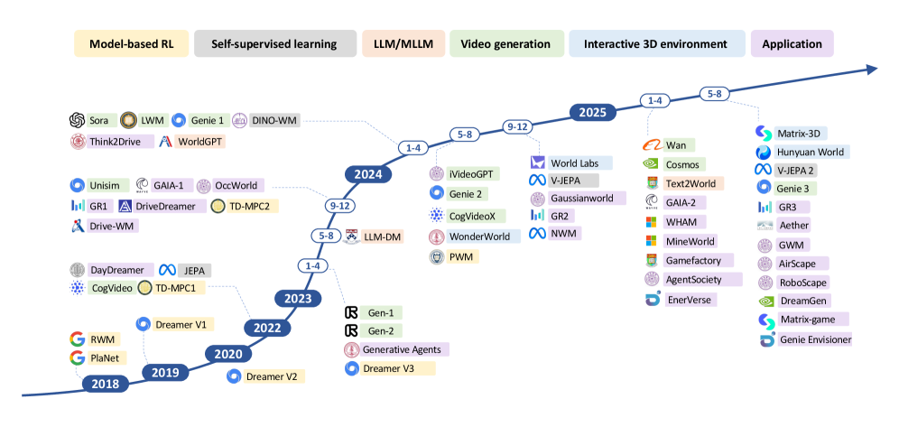

VLM·VLA — 무엇을 잘하는가
지난 몇 년간 AI 연구의 중심을 빠르게 이동한 두 가지 패러다임이 있다. VLM(Vision-Language Model)과 VLA(Vision-Language-Action Model)다.
VLM은 이미지와 텍스트를 통합해 "이 사진에서 무슨 일이 일어나고 있는가"를 언어로 설명하는 데 탁월하다. GPT-4V, Gemini, LLaVA 등이 대표적이며, 이미지 분류·캡셔닝·VQA(시각 질의응답)에서 인간 수준에 근접했다. VLA는 한 걸음 더 나아가 "이 상황에서 로봇이 어떻게 움직여야 하는가"라는 행동까지 예측한다. RT-2, π₀(Pi0), NVIDIA GR00T, OpenVLA 등이 이 범주에 속한다.
VLM이 잘하는 것
- · 이미지·영상 내 객체 인식 및 설명
- · 시각적 질의응답 (VQA)
- · 이미지 기반 지시 이해
- · 다국어 멀티모달 추론
- · 문서·차트 이해
VLA가 잘하는 것
- · 언어 지시 → 로봇 동작 변환
- · 제한된 환경 내 조작 작업
- · 크로스-임바디먼트 일반화
- · 데모 데이터 기반 모방 학습
- · 구조적 작업의 순차 실행
그러나 두 모델 모두가 공유하는 근본적인 공백이 있다. 그것은 세계가 어떻게 작동하는가에 대한 내부 모델이 없다는 것이다. 보고 이해하고, 지시를 받아 행동하지만 — 지금 이 행동이 5초 후 세계를 어떻게 바꿀지는 모른다.
VLM의 한계 — 보는 것만으로는 부족하다
VLM은 강력하지만, 세 가지 근본적인 벽에 부딪힌다.
① 기호 접지 문제 (Symbol Grounding Problem)
VLM은 통계적 분포 모델이다. "사과가 떨어진다"는 문장을 이해하는 것처럼 보이지만, 실제로는 언어 패턴 간의 확률적 연결일 뿐 중력이라는 물리 법칙을 내면화한 것이 아니다. 인지과학에서 말하는 기호 접지가 되어 있지 않다. 멀티모달로 이미지를 연결해도 이 문제는 완전히 해결되지 않는다.
② 언어 없이는 추론 불가
VLM의 추론 과정은 텍스트 표현에 강하게 결합되어 있다. 인간은 언어를 쓰지 않고도 공간적·감각운동적 상상으로 추론할 수 있지만, VLM은 비언어적 과제도 언어 구조를 통해서만 처리한다. 이것은 시공간 추론, 직관적 물리 이해에서 구조적 취약점을 만든다. 예를 들어 GPT-4V에게 "이 공이 경사면을 굴러내려 가면 어디서 멈출까?"를 이미지로 물으면 언어적 설명은 가능하지만, 실제 물리 궤적을 정확히 예측하는 것은 어렵다 — 물리 법칙이 내면화된 게 아니라 언어 패턴으로 근사하기 때문이다.
③ 시간축 단절 — 프레임 독립 처리
대부분의 VLM은 이미지나 영상 프레임을 독립적으로 처리한다. 멀티카메라 입력 시 토큰 수가 폭발적으로 늘어나 실시간 추론이 어렵고, "이 물체가 5초 전 어디 있었고 5초 후 어디 있을 것인가"라는 시간적 인과 추론을 기본 구조상 수행하기 어렵다.

"MLLMs cannot truly reason without language. Their reasoning, perception, and decision-making processes are tightly coupled to textual representations. Unlike humans, who can form visual or sensorimotor imaginations..."
VLA의 한계 — 행동하는 것만으로는 부족하다
VLA는 VLM에 행동 예측 레이어를 추가했다. 하지만 세 가지 핵심 취약점이 남아 있다.
왜 인과성이 결정적인가
자율주행 차량이 "앞에 사람이 있다"를 인식하고 "멈춘다"는 행동을 취하는 것은 VLA로 가능하다. 그러나 "이 사람이 3초 후 오른쪽으로 걸어갈 것인가, 갑자기 뛰어들 것인가"를 물리·행동 법칙을 기반으로 예측하는 것은 다른 종류의 능력이다. 이것이 바로 인과 추론과 미래 상태 예측이며, VLA의 구조적 공백이다.
장기 시퀀스(수천 단계의 행동)가 필요한 Minecraft 다이아몬드 채굴이나 복잡한 로봇 조립은 VLA 단독으로는 해결이 어렵다. 미래를 상상하고, 상상 속에서 행동 결과를 평가하고, 최적 경로를 선택하는 능력 — 이것이 월드 모델이 제공하는 것이다.
월드 모델이란 무엇인가
월드 모델(World Model)은 환경의 변화와 그 결과를 내부적으로 시뮬레이션할 수 있는 AI의 예측 표현이다. 단순히 현재 상태를 인식하는 것이 아니라, "내가 이 행동을 취하면 세계가 어떻게 달라지는가"를 머릿속에서 상상하고 평가할 수 있다.
"월드 모델은 에이전트가 인과성에 대해 추론하고, 가능한 행동의 결과를 상상함으로써 계획을 세울 수 있게 하는 환경의 내부 예측 시뮬레이션이다."
Yann LeCun은 수년간 이 방향을 일관되게 주장해왔다. "3~5년 안에 LLM이 아닌 세계 모델이 AI 아키텍처의 주류가 될 것이며, 오늘날 우리가 쓰는 방식의 LLM을 사용하는 이는 아무도 없을 것"이라고 2025년 말 다시 한 번 강조했다. 그리고 AMI Labs를 창업해 €3B 밸류에이션으로 €500M을 조달, 이 방향에 직접 베팅했다.

두 가지 핵심 기능
1. 세계 이해 (Understanding)
환경의 메커니즘을 내부적으로 표현. 중력, 마찰, 물체 영속성, 인과 구조 등 물리 법칙을 암묵적으로 학습한다. "왜 이런 일이 일어났는가"를 설명할 수 있다.
2. 미래 예측 (Predicting)
가능한 행동의 결과를 시뮬레이션. "내가 A를 하면 어떤 일이 벌어지는가"를 실제 행동 없이 상상 속에서 평가하고 최적 행동을 선택한다.
주요 월드 모델 아키텍처 비교
2025년은 월드 모델의 변곡점이었다. 4개의 대형 시스템이 서로 다른 접근법으로 경쟁하며 실질적인 능력을 증명했다.
1.2B 파라미터. 100만 시간 이상의 영상을 학습했지만 픽셀을 생성하지 않는다 — 잠재 공간(latent space)에서 예측한다. 이것이 핵심 차별점이다. 1단계에서 인터넷 비디오로 물리 법칙을 학습하고, 2단계에서 단 62시간의 로봇 데이터를 추가해 로봇 제어로 전이한다. NVIDIA Cosmos 대비 30배 빠른 계획 속도를 달성했다.
실세계 영상 2000만 시간으로 학습한 물리 AI 플랫폼. Predict(미래 영상 생성), Transfer(시뮬레이션→실사 변환), Reason(계획 + VLM) 세 모델 패밀리로 구성된다. 합성 데이터 생성에 강점이 있어 자율주행·로봇 기업이 실제 수집 없이 다양한 훈련 데이터를 만들 수 있다. 출시 한 달 만에 200만 다운로드를 기록했다.
물리 엔진 없이 스스로 물리 법칙을 학습해 24fps 실시간 인터랙티브 3D 세계를 생성하는 첫 번째 범용 인터랙티브 월드 모델. 텍스트 하나로 3D 레벨을 "타이핑"할 수 있다. 게임·시뮬레이션 분야에서 RL 에이전트 훈련 환경으로 활용 가능성이 크다. 현재는 제한적 프리뷰 단계다.
강화학습 에이전트를 위한 상상 기반 훈련 프레임워크. 에이전트는 실제 환경이 아닌 월드 모델이 만든 정신적 시뮬레이션 안에서 학습한다. Dreamer 4는 오프라인 데이터만으로 Minecraft 다이아몬드 챌린지를 해결했다. "월드 모델 = 픽셀 예측기"라는 통념을 깨고, 경험 생성기로 재정의한다.

| 모델 | 방식 | 주요 용도 | 픽셀 생성 | 오픈소스 |
|---|---|---|---|---|
| V-JEPA 2 | 잠재 공간 JEPA | 물리 추론, 로봇 제어 | ❌ 없음 | ✅ 완전 |
| Cosmos | 확산 + AR 트랜스포머 | 합성 데이터, 자율주행 | ✅ 있음 | ⚠️ 부분 |
| Genie 3 | 인터랙티브 생성 모델 | 3D 세계 생성, RL 환경 | ✅ 있음 | ❌ 제한 |
| DreamerV3/4 | 재귀 잠재 모델 | RL 에이전트 훈련 | 부분 | ✅ 완전 |
월드 모델도 아직 풀지 못한 것
① 물리적 예측 ≠ 추상적 이해
도미노 수천 개가 쓰러지는 영상을 보여주면, 현재 월드 모델은 각 도미노의 물리적 상태와 인과적 충격을 정확히 예측할 수 있다. 그런데 만약 그 배열이 소수 판별 회로를 구현하는 논리 게이트라면? 물리 인과성은 완벽히 추적하지만, 그 시스템이 무엇을 의미하는지는 모른다. 직관적 물리 이해와 고차원 추상 추론 사이의 간극은 아직 열린 문제다. (참고: arXiv:2511.12239)
② 개방 세계의 부분 관찰성
실험실 환경에서는 강하지만, 현실은 센서 한계·안개·폭우·분포 외(OOD) 변수가 상존한다. 에이전트가 내부 시뮬레이션에 과도하게 의존할 때, 상상과 현실의 괴리가 쌓여 로봇이 환각적 행동을 할 수 있다. 추상화 수준을 높이면 연산 효율이 올라가지만 현실 충실도가 낮아진다 — 이 트레이드오프는 아직 해결되지 않았다.
핵심 키워드 분석
2025~2026년 월드 모델 연구에서 가장 자주 등장하는 키워드들을 분류해 정리했다.
아키텍처 키워드
응용 도메인 키워드
능력 키워드
한계·연구 방향 키워드
2026년 새로 등장한 벤치마크
월드 모델의 실제 능력을 측정하기 위한 벤치마크가 쏟아지고 있다. PhysicsMind는 낙하·충돌·물 흐름 등 직관적 물리 추론을 평가하고, RBench는 로봇이 임바디먼트 상황에서 세계를 얼마나 정확히 모델링하는지를 측정하며, DrivingGen은 자율주행 시나리오에서 미래 장면 생성 품질을 평가한다. 이 세 벤치마크 모두 단순 다음 프레임 예측을 넘어 인과성·직관적 물리·장기 계획을 직접 측정한다는 공통점이 있다.
페블러스 관점 — 데이터 운영에도 월드 모델이 필요한가
로봇과 자율주행의 이야기처럼 들릴 수 있다. 하지만 페블러스가 구축하는 DataGreenhouse의 관점에서 월드 모델 패러다임은 직접적인 함의를 가진다.
① 데이터 파이프라인의 "미래 예측" 문제
현재 대부분의 데이터 품질 시스템은 반응적이다 — 오류가 발생한 후 탐지한다. 월드 모델 방식은 "이 데이터 변환 작업이 3단계 후 다운스트림 품질에 어떤 영향을 미치는가"를 사전에 시뮬레이션할 수 있다. 이것은 선제적(proactive) 데이터 품질 관리의 기술적 기반이다.
② AI 모델 성능의 인과 지도
DataGreenhouse는 AI 모델의 훈련·평가 데이터를 관리한다. 여기서 "어떤 데이터 변화가 모델 성능에 어떤 인과적 영향을 주는가"를 이해하는 것은 월드 모델이 하는 일과 구조적으로 같다. 데이터-모델 인과 지도를 만드는 것이 자율형 데이터 운영의 다음 단계다.
③ Sim-to-Real이 데이터에도 적용된다
로봇 분야에서 Cosmos가 합성 데이터로 실세계 훈련 비용을 낮추듯, 데이터 운영에서도 합성 데이터 생성과 실제 데이터 간 분포 차이를 관리하는 능력이 핵심이 된다. DataGreenhouse의 데이터 다양성·대표성 평가는 이 방향에서 의미가 있다.
페블러스의 관찰
VLM·VLA의 한계가 "인과 이해 없는 지각·행동"이라면, 현재 많은 데이터 파이프라인도 같은 구조적 한계를 가진다 — 데이터를 처리하지만 그 처리가 AI 성능에 어떤 인과적 결과를 만드는지 이해하지 못한다. 월드 모델 연구가 제시하는 "내부 인과 모델"의 개념은 자율형 데이터 운영 시스템 설계에서 핵심 원리로 적용될 수 있다.
FAQ
레퍼런스
- [1] Tsinghua University et al., "Understanding World or Predicting Future? A Comprehensive Survey of World Models", ACM CSUR 2025 · arXiv:2411.14499
- [2] Meta AI, "V-JEPA 2: Self-Supervised Video Models Enable Understanding, Prediction and Planning", 2025
- [3] NVIDIA, "Cosmos World Foundation Model Platform for Physical AI", CES 2025 · arXiv:2501.03575
- [4] Google DeepMind, "Genie 3: A New Frontier for World Models", 2025
- [5] Hafner et al., "Mastering Diverse Domains through World Models (DreamerV3)", 2024
- [6] Survey, "A Survey of World Models for Autonomous Driving", arXiv:2501.11260, 2025
- [7] Shang et al., "A Survey of Embodied World Models", Tsinghua FIB Lab, 2025 · arXiv:2510.16732
- [8] Frontiers in Systems Neuroscience, "Will multimodal large language models ever achieve deep understanding of the world?", Nov 2025
- [9] arXiv:2602.01630, "Research on World Models Is Not Merely Injecting World Knowledge into Specific Tasks", Feb 2026
- [10] GitHub: LMD0311/Awesome-World-Model, leofan90/Awesome-World-Models — 커뮤니티 큐레이션 논문 리스트